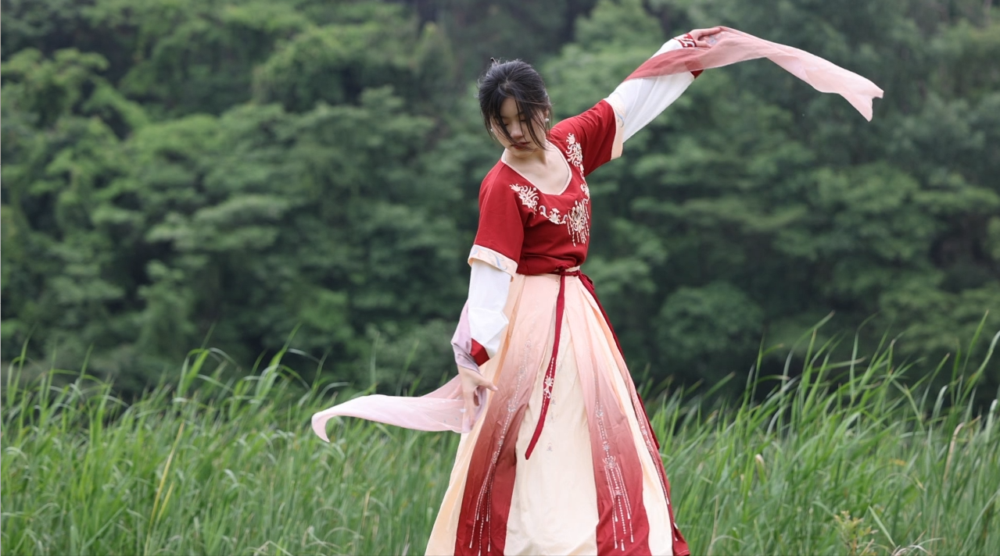
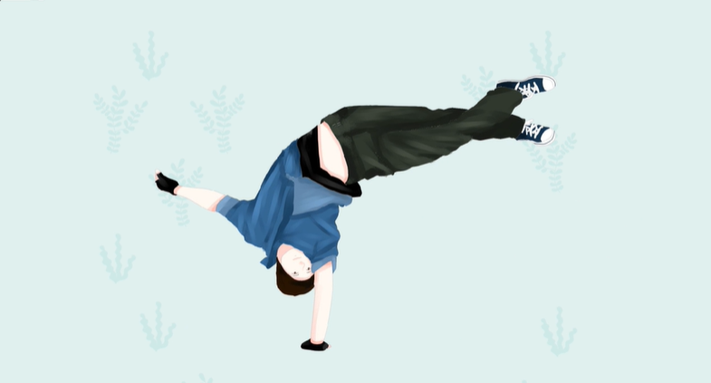
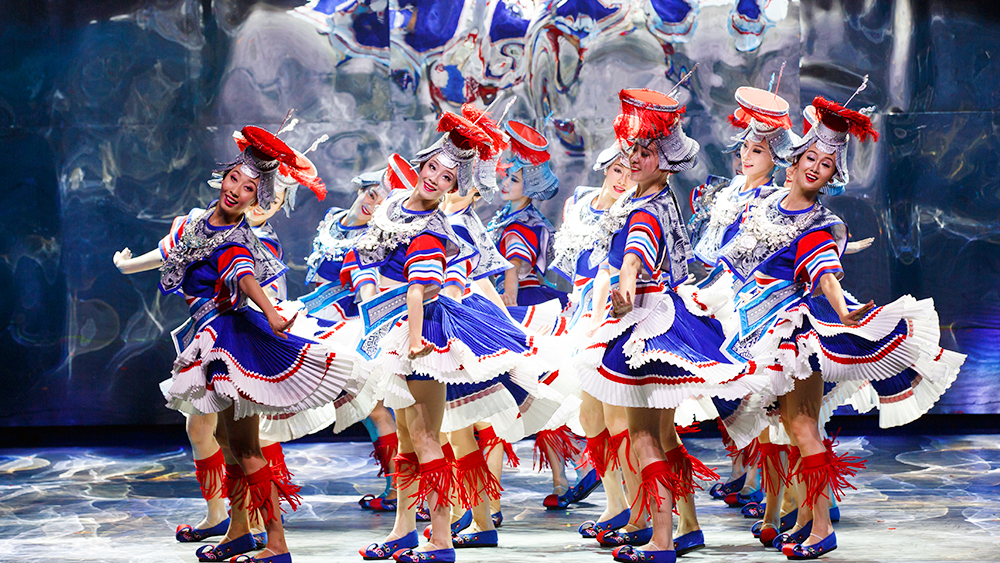

My perception
Dance has played a big part in honing my will. Basic skills are hard and tiring, but they are the cornerstone of success. This also trained me to do everything steadfast, persistent hard character. I started dancing when I was four years old. I studied for eight years and got Professional Level 11 certificate. But unfortunately, in that year, I fractured my ankle and rarely had the opportunity to perform on stage again. Good dance, even if you jump many, many times will not feel tired, each jump will have a new feeling. And with the growth of their own experience, there will be different perceptions, jumping out will give people a different feeling
.
Dance has played a big part in honing my will. Basic skills are hard and tiring, but they are the cornerstone of success. This also trained me to do everything steadfast, persistent hard character. I started dancing when I was four years old. I studied for eight years and got Professional Level 11 certificate. But unfortunately, in that year, I fractured my ankle and rarely had the opportunity to perform on stage again. Good dance, even if you jump many, many times will not feel tired, each jump will have a new feeling. And with the growth of their own experience, there will be different perceptions, jumping out will give people a different feeling
.

Favorite Dance style - Urban Dance
Urban
Dance has been called a "work of art" and holds a special place in the hearts of many dancers for its extraordinary creativity, quality choreography and melodrama
. Urban
Dance is not a kind of dance, but a form of dance expression. It is a kind of individual expression that does not adhere to tradition. It is a dancer's pursuit of art and an organic integration of trends, new elements and dance.
Urban
Dance has been called a "work of art" and holds a special place in the hearts of many dancers for its extraordinary creativity, quality choreography and melodrama
. Urban
Dance is not a kind of dance, but a form of dance expression. It is a kind of individual expression that does not adhere to tradition. It is a dancer's pursuit of art and an organic integration of trends, new elements and dance.

Chinese folk dance
Singing and dancing, free and lively. One of the main characteristics of Chinese folk dance is the close combination of dance and singing. This form of singing and dancing is free, vivid and lively, and can easily express more life content than pure dance, and it is easy to understand, so it is very popular with the broad masses of Chinese people. Skillful use of props, skill combination. Many Chinese folk dances skillfully use props, such as fans, handkerchiefs, long silk, tabla, single drum, flower stick, lantern, flower umbrella, etc., which greatly strengthens the artistic expression of the dance and makes the dance movements more rich, beautiful and colorful.
The plot is vivid and the image is vivid. Chinese folk dances focus on the content, most of which are based on certain stories and legends. Therefore, the characters have distinct images and prominent personalities.
Singing and dancing, free and lively. One of the main characteristics of Chinese folk dance is the close combination of dance and singing. This form of singing and dancing is free, vivid and lively, and can easily express more life content than pure dance, and it is easy to understand, so it is very popular with the broad masses of Chinese people. Skillful use of props, skill combination. Many Chinese folk dances skillfully use props, such as fans, handkerchiefs, long silk, tabla, single drum, flower stick, lantern, flower umbrella, etc., which greatly strengthens the artistic expression of the dance and makes the dance movements more rich, beautiful and colorful.
The plot is vivid and the image is vivid. Chinese folk dances focus on the content, most of which are based on certain stories and legends. Therefore, the characters have distinct images and prominent personalities.